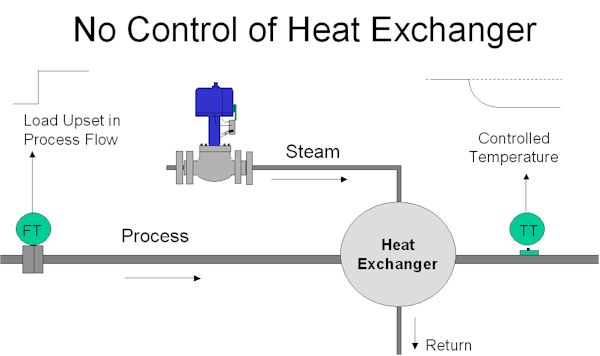
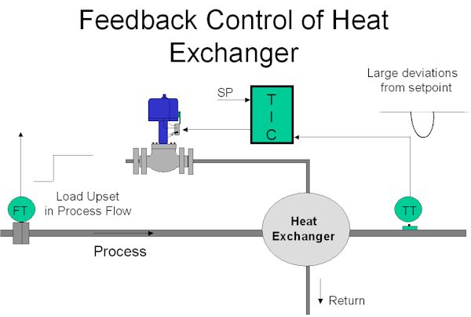
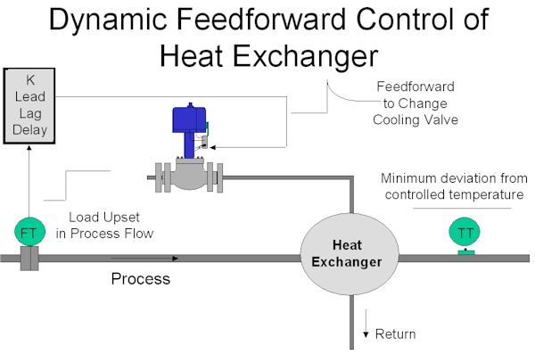
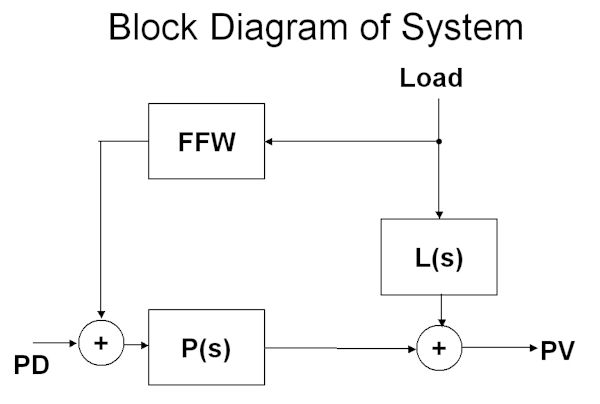
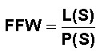
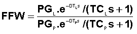
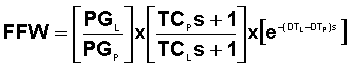
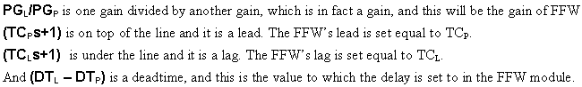

|
| [Home] [About us] [Contact us] [Training] [Optimisation services] [Protuner] |
| [Loop signatures] [Case histories] [Continuous loop performance monitoring] |
|
Loop Problem Signatures Part 2 Feedforward control - part 1 Feedforward control is a powerful technique that can dramatically improve control variance in cases where load changes cause big deviations from setpoint and the actual process dynamics are too slow to allow the feedback controller to operate fast enough to catch these disturbances. I have come across many instances in plants where feedforward could have been used successfully, but has not been employed as the control people do not know how to implement it properly. Once again it all comes back to lack of education on practical control in educational institutions. Figure 1 shows a heat exchanger that is used to heat a process fluid. The main problem in this particular process is that the process fluid flow through the exchanger can vary intermittently and very quickly. As seen in the figure, there is no control system.  Figure 1 Imagine that the operator has got the process to the right temperature by manually adjusting the steam control valve. Suddenly the process fluid flow increases instantly by say 10%. As temperature is a slow process with a long lag, the temperature PV on the exchanger's output will slowly decrease to a lower value. The normal way of trying to keep the temperature constant at setpoint would be to use feedback control. This is shown in Figure 2.  Figure 2 However there is a big problem here with feedback control, because as described in the first Loop Signature Series, one must tune the feedback controller to match the dynamics of the actual process. In this case the process will very likely have a large first order lag with a time constant that may be many minutes long. The integral in the controller will then have to be set close or equal to this time constant. This means that the controller can only respond slowly to changes, particularly to slow PV (process variable) changes. Also remember that a feedback control system can only start making corrections after an error is picked up in the controller. The overall result as seen in the figure, will be that a large deviation from setpoint will occur before the feedback controller can get the process back to setpoint. Imagine for the moment, that when the step load change occurs we move the control valve in such a manner that will increase the temperature in an exactly equal and opposite way to the drop in temperature being experienced by the increased process flow through the exchanger. If this could be achieved, then we would actually cancel out the effect of the load change, so that there would be no deviation at all from setpoint. This is exactly what feedforward control attempts to do. Theoretically zero control variance is possible with feedforward! Figure 3 shows a basic feedforward control scheme to accomplish this. (The feedback control system has been removed). The signal from the flowmeter measuring the flow of process fluid, is sent to a module known as a feedforward (FFW) module or feedforward controller. The output from this is connected directly to the control valve.  Figure 3 The transfer function of a feedforward module usually contains a number of different adjustable dynamic constants, most commonly a gain, a lead, a lag, and a time delay (deadtime). (In the simplest form of feedforward module, provided as standard in many feedback controllers, only a gain is provided). We will return to more on these dynamics a little later. To tune the feedforward, one attempts to set the dynamic constants in the module so that the effect of the load change as measured on the flowmeter will send a signal to the control valve that will result in increasing the temperature in an equal and opposite manner to the dropping temperature effect that will occur from the load change. To explain how this can be achieved we need to look at a little mathematics, but for those whose maths is really rusty don't despair. This is only an explanation. You don't need to be able to do maths to use feedforward. Simple control theory is best explained using Laplace mathematics (which is a convenient form of maths for working in both time and frequency domains). We mentioned in the last article in this Part 2 series that transfer functions would be used a lot in the series. (It may be worth your while to revise the sections on simple dynamics in the Part 1 series where you will see the transfer function equations for various simple transfer functions given in the relevant figures). Anyway to reintroduce a few of the main terms that you may find in transfer functions that will be used throughout this series:
Back to our feedforward control story: The feedforward control system can be redrawn in the block format as shown in Figure 4. FFW is the feedforward module, L(S) is the transfer function of the effect of the LD (load change) on the PV (process variable), and P(S) is the transfer function of the actual process; i.e. effect of PD (process demand) change on the PV.  Figure 4 Now mathematically if we wish to cancel out the effect of the load change on the process then we must set the FFW as follows:  For the present let us assume that both the load and process functions are of the simple first order lag, deadtime, self-regulating type. (Now I know that in the previous Loop Signature series I did say that simple models like that would not allow good feedback controller tuning on many processes. However I will show later that feedforward tuning is in fact much more forgiving than feedback tuning, and even these simplistic models give good results in actual practice.) The full equation in Laplace format is then:  Where PG is gain, TC is time constant of the lag, and DT is deadtime. This can be simplified as follows:  This may look slightly complicated, but it is in fact incredibly simple because:  So far this all looks very good, but unfortunately the control scheme as shown in Figure 3 will probably not work very well in real life. Feedforward is great as it compensates for measurable load changes before they can upset the controlled variable, as opposed to feedback control which can only make corrections after the upset has occurred to the controlled variable. However feedforward does suffer from a major disadvantage in that it cannot compensate for unmeasured upsets, or deal with any non-linearities in the system, or for that matter correct for any problems that may occur in the valve. Therefore using feedforward by itself will probably not result in the process staying at setpoint all the time. Consequently as feedforward control by itself is not completely satisfactorily, it becomes necessary to also use a feedback control system to overcome the other problems mentioned above. Feedback and feedforward must always be used together. In the settings given above for the FFW module there are two things that you must be careful about: Firstly the gain of the FFW must be set to give the correct control action. In the case of this heat exchanger, the feedforward must act to open the valve if the flow increases, and not close it. Even more variance than before feedforward was employed will result if the valve moves the wrong way. Secondly if the term (DTL – DTP) is negative because the deadtime of the load is less than the deadtime of the process, then set the delay in the FFW to zero. (There are ways of trying to compensate for this situation by trying to incorporate a deadtime predictor in the feedback loop, but this is usually overcomplicated, affects the feedback tuning, and usually does not work very well in practice.) In the next article in this series it will be shown how to set up the full control system, and an explanation will be given of how easy it is to obtain the two models needed for load and process transfer functions. Michael
Brown is a specialist in control loop optimisation, with many years of
experience in process control instrumentation. His main activities are
consulting, and teaching practical control loop analysis and
optimisation. He gives training courses which can be held in clients'
plants, where students can have the added benefit of practising on live
loops. His work takes him to plants all over South Africa, and also to
other countries. He can be contacted at:
|